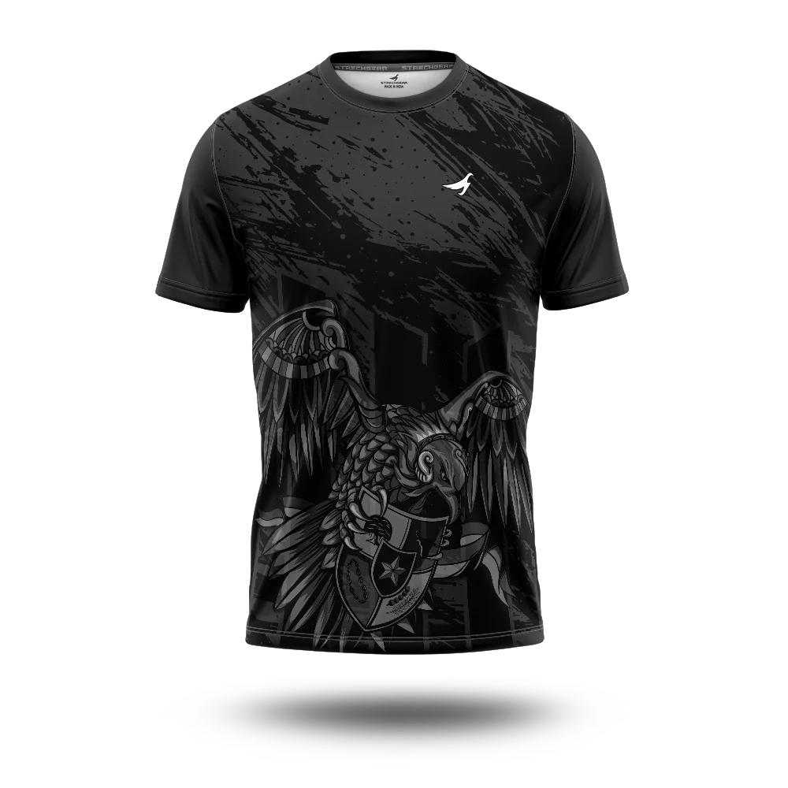
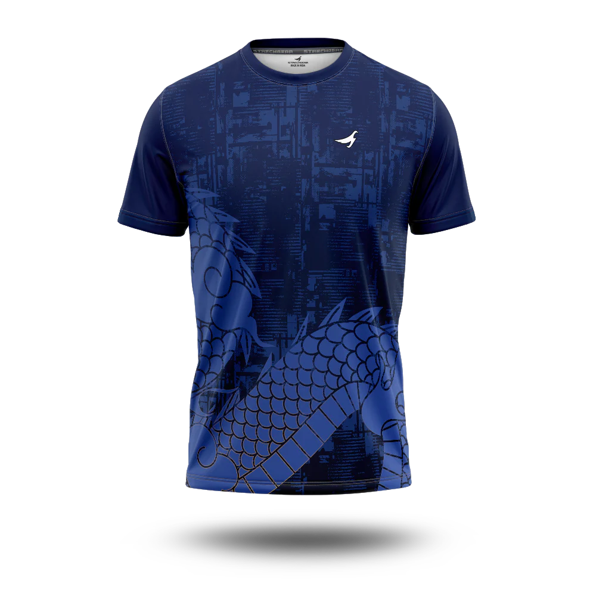
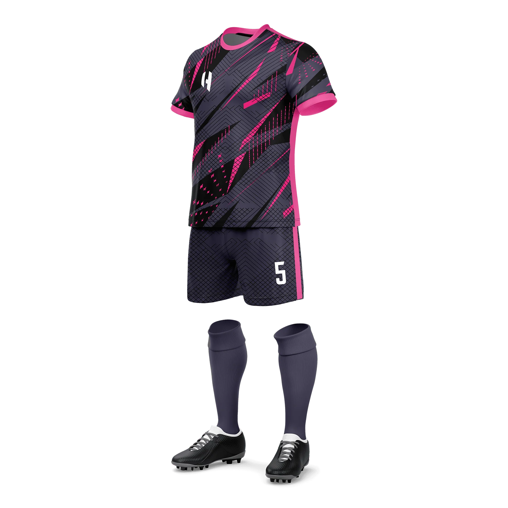
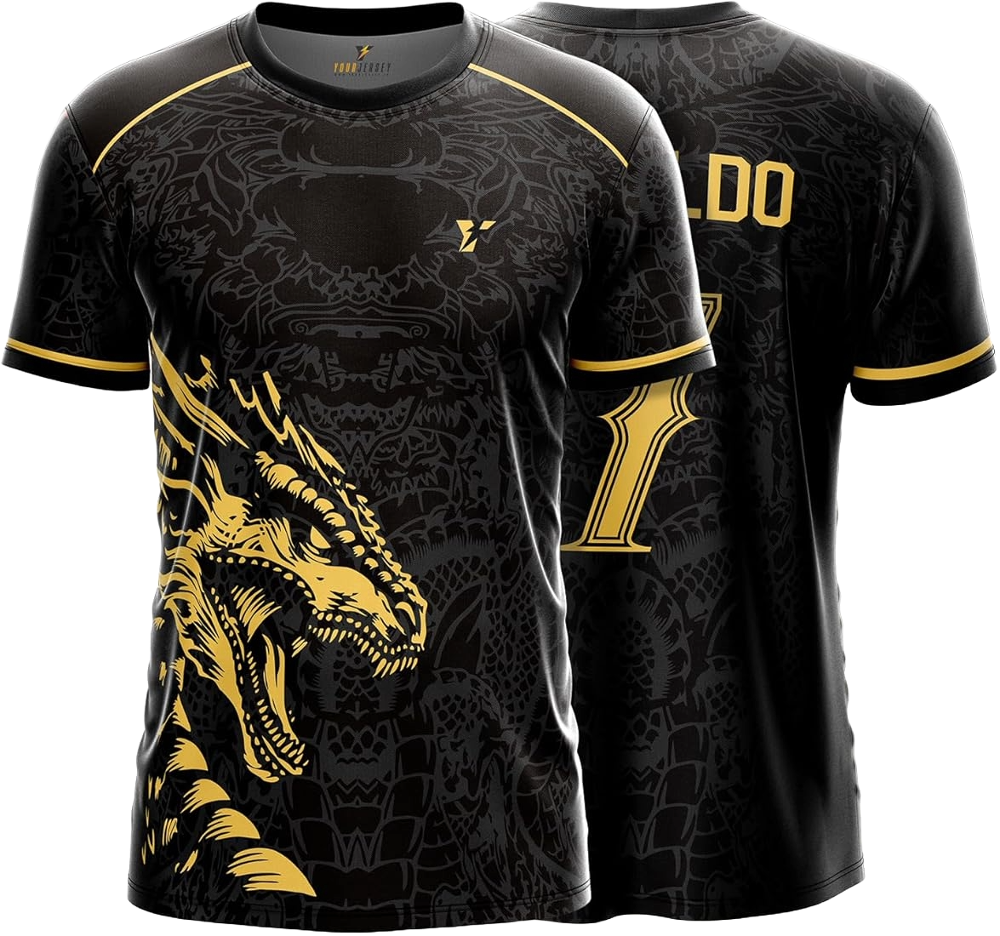
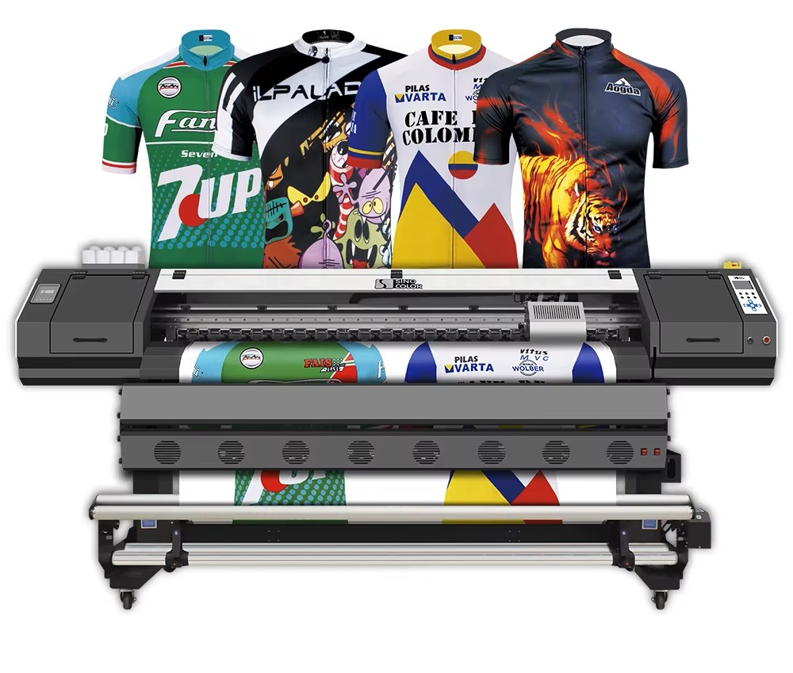

ABOUT BATIGOL
Crafting premium sportswear for champions across Qatar




Crafting premium sportswear for champions across Qatar




BATIGOL is one of the most reputed sports apparel manufacturers and retailers in Qatar, recognized for its commitment to quality, innovation, and performance-driven design. Over the years, the brand has positioned itself as a trusted partner for sports clubs, academies, schools, and organizations seeking reliable and customized sportswear solutions.
Established in 2013 under the leadership of Mr. Younis Darwish, BATIGOL began with a clear vision — to deliver high-quality sports apparel tailored to the evolving needs of athletes and teams. What started as a growing venture has now developed into a well-established name in the sportswear industry across Qatar.
From custom-designed jerseys and full team uniforms to training kits, tracksuits, and accessories, BATIGOL offers a comprehensive range of sportswear products. Each product is crafted with attention to detail, combining durability, comfort, and modern design to enhance athletic performance on and off the field.
With an in-house production facility in Doha, BATIGOL ensures faster turnaround times, consistent quality control, and flexibility in customization. This local manufacturing capability allows the company to meet client expectations efficiently while maintaining the highest standards in every stage of production.
Today, BATIGOL continues to grow by building long-term relationships with clients, delivering reliable service, and constantly evolving with new technologies and design trends in the sports industry.
BATIGOL established its production facility in Doha to ensure faster delivery, better customization, and consistent quality across every product we create.
With advanced machinery and a team of skilled professionals, we handle everything from design to final production with precision and care.


Our mission is to build long-term relationships with our customers and clients by delivering exceptional service, innovative solutions, and high-quality sportswear that meets the evolving demands of modern athletes.
Our systems and processes are carefully designed to monitor and control every stage of production, ensuring that each product meets the highest standards of quality, durability, and performance.
Every product undergoes strict quality checks.
Controlled production at every stage.
Built for performance and long-term use.
Consistent premium quality in every product.
A diversified group managing multiple business sectors with a strong presence in Qatar.
A leading sportswear brand specializing in customized apparel for teams, clubs, and institutions.
A premium grooming and wellness brand delivering high-quality services and customer experiences.